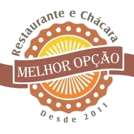

Famílias
Uma refeição que pode virar passeio, conversa e um dia inteiro para aproveitar juntos.

Gastronomia, natureza e aquele tempo gostoso de ficar. Um destino para reunir a família, fazer uma pausa na estrada ou transformar o fim de semana em refúgio.
Em Bateias, o Melhor Opção combina gastronomia e natureza em um cenário que convida a desacelerar. O entorno reúne lagos, bosque, mata nativa e rio — uma atmosfera que transforma a refeição em parte de um dia inteiro.
Role a página e entre no clima.
Você deixa o ritmo da cidade para trás e entra em uma paisagem onde a natureza começa a conduzir o passeio.
Uma refeição que pode virar passeio, conversa e um dia inteiro para aproveitar juntos.

Um ponto de parada em Bateias para descansar, comer bem e aproveitar a paisagem.

Natureza, tranquilidade e a possibilidade de estender a experiência no Chalé das Araucárias.
Petiscaria, almoço e sabores que combinam com encontro. Aqui o convite não é correr: é sentar, dividir, conversar e aproveitar.

Uma mesa que combina com família, amigos e domingo sem pressa.

Comida que aproxima as pessoas e faz parte do passeio.

Petiscos e pratos para dividir bons momentos à mesa.
A reputação do restaurante e do chalé reforça aquilo que o lugar propõe: boa experiência, contato com a natureza e hospitalidade.
*Notas consultadas em fontes públicas em outubro de 2026 e sujeitas a atualização.Integrado à experiência do Melhor Opção, o chalé é uma opção aconchegante para quem quer transformar a visita em uma pequena viagem.
Descubra o Melhor Opção em Bateias e transforme seu próximo almoço em um passeio completo.
Falar no WhatsApp →